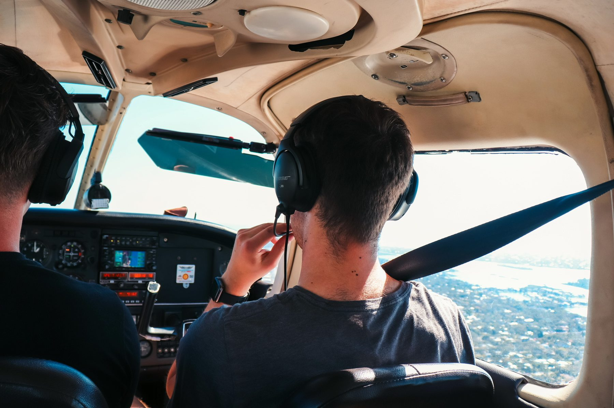
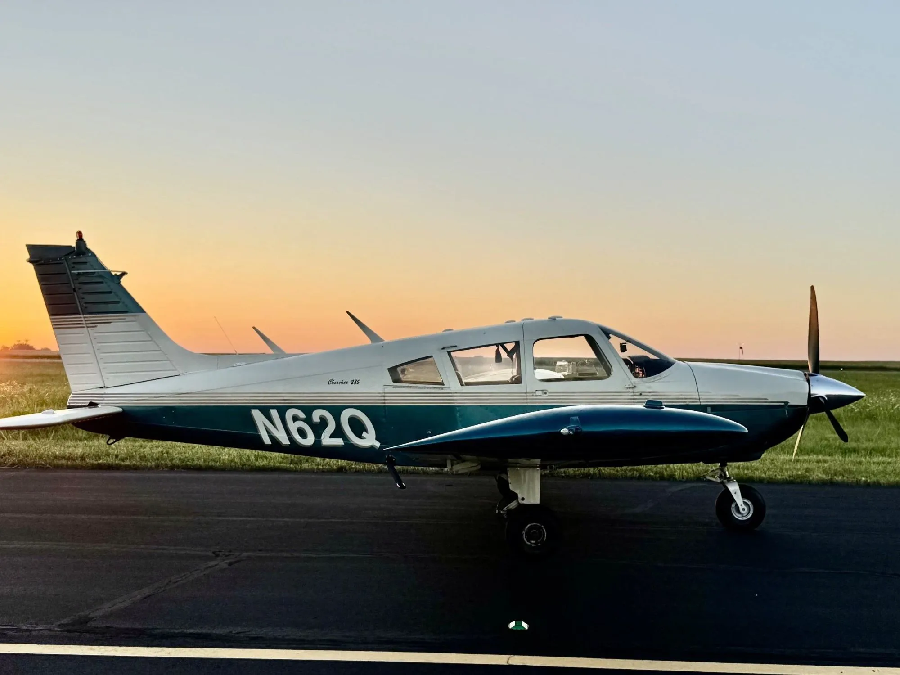
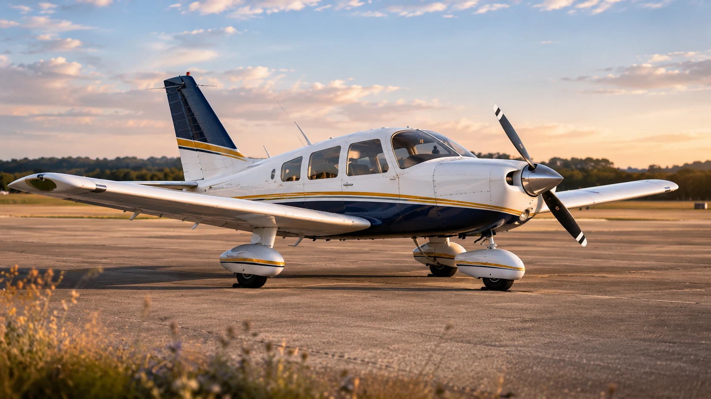

Learning to fly is an exciting decision. Whether your goal is to become an airline pilot, fly recreationally, or simply experience the freedom of aviation, choosing the right flight school is one of the most important decisions you'll make.
If you're researching flight schools in Austin, Texas, you'll find several training options throughout the greater Austin area. But not every flight school offers the same experience, and the least expensive advertised hourly rate doesn't necessarily mean the lowest overall training cost.
Before committing your time and money, here are seven things every prospective student pilot should consider.
1. Understand Part 61 vs. Part 141 Flight Training
One of the first things you'll encounter when comparing flight schools is the distinction between Part 61 and Part 141 training.
Both are governed by Federal Aviation Administration (FAA) regulations, and both can lead to the same pilot certificates.
Part 61 flight training generally offers more flexibility. Students can often schedule lessons around work, school, or other commitments. Instructors can also adapt training to individual progress while meeting the required standards.
Part 141 flight training follows an FAA-approved curriculum with additional organizational and oversight requirements. This structure may appeal to students who prefer a more formalized training environment.
For a Private Pilot Certificate in an airplane, the minimum flight experience is generally:
- Part 61: 40 flight hours.
- Part 141: 35 flight hours through an approved course.
However, these are regulatory minimums, not guarantees. The FAA notes that many students require approximately 60–75 hours to complete their training.
Our advice: Choose the training environment that best fits your learning style, schedule, and long-term aviation goals — not simply the program advertising fewer required hours.
2. Look Beyond the Advertised Hourly Rate
Flight training is a significant financial investment, so understanding the full cost is essential.
Most schools charge separately for aircraft rental and flight instruction. Depending on the school, additional expenses may include:
- Ground instruction and training materials.
- FAA knowledge testing.
- Aviation medical examinations.
- Headsets and other equipment.
- Checkride examiner fees.
- Additional training flights or proficiency reviews.
For example, a school advertising a lower aircraft rental rate might have limited availability, higher instructor fees, or additional charges that increase your total training cost.
Ask each school for an estimated training budget based on realistic completion hours, not just the FAA minimum.
Also, clarify whether aircraft rental is billed using Hobbs time, tachometer time, or another method. These differences can affect your actual costs.
Our advice: Request a written breakdown of estimated expenses and ask what happens if your training takes longer than expected.

3. Evaluate the Flight Instructors
Your flight instructor will play a major role in your development as a pilot.
An effective Certified Flight Instructor (CFI) does more than demonstrate maneuvers or prepare you for an examination. They help you develop sound judgment, confidence, and the ability to make safe decisions when circumstances change.
When meeting a prospective instructor, consider asking:
- How do you structure lessons and track student progress?
- How do you help students who struggle with a particular maneuver?
- Will I primarily train with the same instructor?
- How frequently are you available to fly?
- How do you prepare students for solo flight and their practical test?
Instructor continuity matters. Frequently changing instructors can create unnecessary repetition as each new instructor evaluates your abilities.
At the same time, access to another qualified instructor can be valuable when your primary instructor is unavailable.
Our advice: Look for an instructor who communicates clearly, welcomes questions, and makes safety a priority without discouraging you from learning.
4. Consider the Airport and Its Training Environment
Austin-area students have access to airports with different operating environments, traffic levels, and surrounding airspace.
Training near a busy airport can provide valuable exposure to radio communications and air traffic control procedures. However, significant taxi delays or congestion may reduce the amount of time available for certain maneuvers during a lesson.
Smaller airports may offer convenient access to practice areas and a different learning environment.
Neither is automatically better.
When comparing flight schools around Austin, consider:
- Driving distance from home or work.
- Airport traffic and potential ground delays.
- Access to nearby practice areas.
- Opportunities to practice at towered and non-towered airports.
- Aircraft parking and facility availability.
- How the school incorporates different airspace environments into training.
A school located farther from your home might provide excellent instruction, but a lengthy commute can make maintaining a consistent schedule difficult.
Our advice: Choose an airport environment that supports both your learning objectives and your ability to train regularly.

5. Ask About Aircraft Availability and Maintenance
Training aircraft don't need luxurious interiors or the newest avionics to provide excellent instruction.
They do need to be properly maintained, appropriately equipped, and available when you need them.
Ask prospective schools how many training aircraft they operate, how maintenance is scheduled, and what happens when an aircraft becomes unavailable.
You should also understand whether the school has multiple aircraft of the same type or whether your training depends on a single airplane.
An aircraft that's frequently unavailable can disrupt your training schedule, even when your instructor has plenty of openings.
For students considering instrument training later, it's worth asking about the school's aircraft equipment and how that equipment supports future training.
Our advice: Prioritize maintenance practices, aircraft availability, and training suitability over cosmetic appearance.
6. Choose a School That Supports Consistent Training
Consistency is one of the most overlooked factors in flight training.
Flying regularly helps reinforce procedures, improve aircraft handling, and retain information between lessons.
Long gaps between flights can require additional review, potentially increasing the time and money needed to reach your goals.
Before enrolling, ask how far in advance lessons can be scheduled and whether the school has enough instructor and aircraft availability to support your desired training frequency.
For many part-time students, planning approximately two or three lessons per week is a useful starting point, subject to weather, finances, and personal availability.
You should also ask whether the school uses a structured syllabus and provides clear progress updates.
A flexible schedule shouldn't mean training without a plan.
Our advice: Find a school that combines scheduling flexibility with clear milestones and consistent instruction.
7. Take a Discovery Flight Before Committing
One of the best ways to evaluate a flight school is to experience it firsthand.
A discovery flight is an introductory aviation experience that typically allows you to meet an instructor, see the training aircraft, and experience what flying a small airplane feels like.
It's also an opportunity to observe the school's atmosphere and ask questions.
Pay attention to how the instructor explains procedures, addresses your concerns, and involves you in the experience.
Afterward, ask yourself: Did I feel comfortable asking questions? Did the instructor explain things clearly? Can I picture myself learning here?
A discovery flight won't tell you everything about a training program, but it can help you make a more informed decision.
Questions to Ask Before Enrolling
Before choosing a flight school, make sure you can answer these questions:
- What is the estimated total cost of earning my Private Pilot Certificate?
- How often can I realistically schedule flight lessons?
- Will I have a primary instructor?
- What happens if my aircraft or instructor becomes unavailable?
- Does the school use a structured training syllabus?
- How are flight and ground instruction billed?
- What support is available for the FAA knowledge test and checkride?
- Can I speak with current or former students?
A reputable training provider should be willing to discuss these topics openly.

Starting Your Flight Training Journey in Austin
Austin and the surrounding Central Texas communities offer opportunities to pursue aviation training, whether you're interested in flying for recreation or eventually building a professional aviation career.
The best flight school isn't necessarily the largest, the closest, or the one with the lowest advertised hourly rate.
It's the one that provides safe, consistent, well-organized instruction that supports your individual goals.
At Apex Aviation, we're preparing to establish Part 61 flight training operations in the greater Austin area, with a focus on individualized instruction, structured student progress, and developing confident, safety-conscious pilots. In the meantime, Apex Advantage provides ground instruction and pilot preparation resources to help students strengthen their aeronautical knowledge.
Frequently Asked Questions
How much does flight school cost in Austin, Texas?
The total cost depends on aircraft rental rates, instructor fees, the number of hours required, and other training expenses. Request a personalized estimate from each school and budget for more than the regulatory minimum flight hours.
How long does it take to become a private pilot?
The timeline depends on how frequently you train, your progress, aircraft availability, and weather. Students flying several times per week may progress more quickly than those flying occasionally, although individual results vary.
Is Part 61 or Part 141 better for beginners?
Both can provide excellent training. Part 61 often appeals to students seeking flexibility, while Part 141 offers an FAA-approved, structured training program. Your learning style and goals should guide the decision.
Do I need to complete ground school before my first flight?
No. Ground and flight instruction can take place alongside each other. However, building a strong understanding of aviation fundamentals early in training can make flight lessons more productive.
Can I start learning aviation before enrolling at a flight school?
Absolutely. Studying aerodynamics, weather, regulations, and basic flight procedures can help you prepare for formal flight training.
Ready to take the next step? Apex's Austin-area flight training is planned for March 2027, with Apex Advantage ground instruction and pilot-prep resources — including Checkride Prep and Mock Orals — available now. Join the waitlist for updates, or reach out directly about upcoming flight training opportunities in Central Texas.
This article is for general informational purposes and does not constitute FAA regulatory guidance. Flight training requirements, timelines, and costs vary by school, aircraft, and individual student progress.